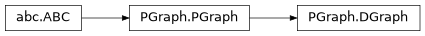

Directed graph
- class PGraph.DGraph(arg=None, metric=None, heuristic=None, verbose=False)[source]
Bases:
PGraphClass for directed graphs
- classmethod Adjacency(A, coords=None, names=None)
Create graph from adjacency matrix
- Parameters:
A (ndarray(N,N)) – adjacency matrix
coords (ndarray(N,M), optional) – coordinates of vertices, defaults to None
names (list(N) of str, optional) – names of vertices, defaults to None
- Returns:
[description]
- Return type:
[type]
Create a directed or undirected graph where non-zero elements
A[i,j]correspond to edges from vertexito vertexj.Warning
For undirected graph
Ashould be symmetric but this is not checked. Only the upper triangular part is used.
- classmethod Dict(d, reverse=False)
Create graph from parent/child dictionary
- Parameters:
d (dict) – dictionary that maps from
Vertexsubclass toVertexsubclassreverse (bool, optional) – reverse link direction, defaults to False
- Returns:
graph
- Return type:
Behaves like a constructor for a
DGraphorUGraphfrom a dictionary that maps vertices to parents. From this information it can create a tree graph.By default parent vertices are linked their children. If
reverseis True then children are linked to their parents.
- Laplacian()
Laplacian matrix for the graph
- Returns:
Laplacian matrix
- Return type:
NumPy ndarray
g.Laplacian()is the Laplacian matrix (NxN) of the graph where N is the number of vertices.Note
Laplacian is always positive-semidefinite.
Laplacian has at least one zero eigenvalue.
- The number of zero-valued eigenvalues is the number of connected
components in the graph.
- Seealso:
- __init__(arg=None, metric=None, heuristic=None, verbose=False)
- add_edge(v1, v2, **kwargs)
Add an edge to the graph (superclass method)
- Parameters:
v1 (Vertex subclass) – first vertex (start if a directed graph)
v2 (Vertex subclass) – second vertex (end if a directed graph)
kwargs – optional arguments to pass to
Vertex.connect
- Returns:
edge
- Return type:
Create an edge between a vertex pair and adds it to the graph.
This is a graph centric way of creating an edge. The alternative is the
connectmethod of a vertex.- Seealso:
- add_vertex(coord=None, name=None)[source]
Add vertex to directed graph
- Parameters:
coord (array-like, optional) – coordinate for an embedded graph, defaults to None
name (str, optional) – vertex name, defaults to “#i”
- Returns:
new vertex
- Return type:
g.add_vertex()creates a new vertex with optionalcoordandname.g.add_vertex(v)takes an instance or subclass of DVertex and adds it to the graph
- adjacency()
Adjacency matrix of graph
- Returns:
adjacency matrix
- Return type:
ndarray(N,N)
The elements of the adjacency matrix
[i,j]are 1 if vertexiis connected to vertexj, else 0.Note
vertices are numbered in their order of creation. A vertex index can be resolved to a vertex reference by
graph[i].for an undirected graph the matrix is symmetric
Eigenvalues of
Aare real and are known as the spectrum of the graph.The element
A[i,j]can be considered the number of walks of length one edge from vertexito vertexj(either zero or one).If
Ak = A ** kthe elementAk[i,j]is the number of walks of lengthkfrom vertexito vertexj.
- Seealso:
- average_degree()
Average degree of the graph
- Returns:
average degree
- Return type:
float
Average degree is \(2 E / N\) for an undirected graph and \(E / N\) for a directed graph where \(E\) is the total number of edges and \(N\) is the number of vertices.
- closest(coord)
Vertex closest to point
- Parameters:
coord (ndarray(n)) – coordinates of a point
- Returns:
closest vertex
- Return type:
Vertex subclass
Returns the vertex closest to the given point. Distance is computed according to the graph’s metric.
- Seealso:
- component(c)
All vertices in specified graph component
graph.component(c)is a list of all vertices in graph componentc.
- connectivity(vertices=None)
Graph connectivity
- Returns:
a list with the number of edges per vertex
- Return type:
list
The average vertex connectivity is:
mean(g.connectivity())
and the minimum vertex connectivity is:
min(g.connectivity())
- degree()
Degree matrix of graph
- Returns:
degree matrix
- Return type:
ndarray(N,N)
This is a diagonal matrix where element
[i,i]is the number of edges connected to vertex idi.- Seealso:
adjacency()incidence()laplacian()
- distance()
Distance matrix of graph
- Returns:
distance matrix
- Return type:
ndarray(n,n)
The elements of the distance matrix
D[i,j]is the edge cost of moving from vertexito vertexj. It is zero if the vertices are not connected.
- dotfile(filename=None, direction=None)
Export graph as a GraphViz dot file
- Parameters:
filename (str, optional) – filename to save graph to, defaults to None
g.dotfile()creates the specified file which contains the GraphViz code to represent the embedded graph. By default output is to the console.Note
The graph is undirected if it is a subclass of
UGraphThe graph is directed if it is a subclass of
DGraphUse
neatorather than dot to get the embedded layout
Note
If
filenameis a file object then the file will not be closed after the GraphViz model is written.- Seealso:
- edges()
Get all edges in graph (superclass method)
- Returns:
All edges in the graph
- Return type:
list of Edge references
We can iterate over all edges in the graph by:
for e in g.edges(): print(e)
Note
The
edges()of a Vertex is a list of all edges connected to that vertex.- Seealso:
- property heuristic
Get the heuristic distance metric for graph
- Returns:
heuristic distance metric
- Return type:
callable
This is a function of a vector and returns a scalar.
- highlight_edge(edge, scale=2, color='r', alpha=0.5)
Highlight an edge in the graph
- Parameters:
edge (Edge subclass) – The edge to highlight
scale (float, optional) – Overwrite with a line this much bigger than the original, defaults to 1.5
color (str, optional) – Overwrite with a line in this color, defaults to ‘r’
- highlight_path(path, block=False, **kwargs)
Highlight a path through the graph
- Parameters:
path ([type]) – [description]
block (bool, optional) – [description], defaults to True
The vertices and edges along the path are overwritten with a different size/width and color.
- Seealso:
- highlight_vertex(vertex, scale=2, color='r', alpha=0.5)
Highlight a vertex in the graph
- Parameters:
edge (Vertex subclass) – The vertex to highlight
scale (float, optional) – Overwrite with a line this much bigger than the original, defaults to 1.5
color (str, optional) – Overwrite with a line in this color, defaults to ‘r’
- incidence()
Incidence matrix of graph
- Returns:
incidence matrix
- Return type:
ndarray(n,ne)
The elements of the incidence matrix
I[i,j]are 1 if vertexiis connected to edgej, else 0.Note
vertices are numbered in their order of creation. A vertex index can be resolved to a vertex reference by
graph[i].edges are numbered in the order they appear in
graph.edges().
- Seealso:
- iscyclic()
- property metric
Get the distance metric for graph
- Returns:
distance metric
- Return type:
callable
This is a function of a vector and returns a scalar.
- property n
Number of vertices
- Returns:
Number of vertices
- Return type:
int
- property nc
Number of components
- Returns:
Number of components
- Return type:
int
Note
Components are labeled from 0 to
g.nc-1.A graph coloring algorithm is run if the graph connectivity has changed.
Note
A lazy approach is used, and if a connectivity changing operation has been performed since the last call, the graph coloring algorithm is run which is potentially expensive for a large graph.
- property ne
Number of edges
- Returns:
Number of vertices
- Return type:
int
- path_Astar(S, G, verbose=False, summary=False)
A* search for path
- Parameters:
S (Vertex subclass) – start vertex
G (Vertex subclass) – goal vertex
- Returns:
list of vertices from S to G inclusive, path length, tree
- Return type:
list of Vertex subclass, float, dict
Returns a list of vertices that form a path from vertex
Sto vertexGif possible, otherwise return None.The search tree is returned as dict that maps a vertex to its parent.
The heuristic is the distance metric of the graph, which defaults to Euclidean distance.
- Seealso:
- path_BFS(S, G, verbose=False, summary=False)
Breadth-first search for path
- Parameters:
S (Vertex subclass) – start vertex
G (Vertex subclass) – goal vertex
- Returns:
list of vertices from S to G inclusive, path length
- Return type:
list of Vertex subclass, float
Returns a list of vertices that form a path from vertex
Sto vertexGif possible, otherwise return None.
- path_UCS(S, G, verbose=False, summary=False)
Uniform cost search for path
- Parameters:
S (Vertex subclass) – start vertex
G (Vertex subclass) – goal vertex
- Returns:
list of vertices from S to G inclusive, path length, tree
- Return type:
list of Vertex subclass, float, dict
Returns a list of vertices that form a path from vertex
Sto vertexGif possible, otherwise return None.The search tree is returned as dict that maps a vertex to its parent.
The heuristic is the distance metric of the graph, which defaults to Euclidean distance.
- plot(colorcomponents=True, force2d=False, vopt={}, eopt={}, text={}, block=False, grid=True, ax=None)
Plot the graph
- Parameters:
vopt (dict, optional) – vertex format, defaults to 12pt o-marker
eopt (dict, optional) – edge format, defaults to None
text (False or dict, optional) – text label format, defaults to None
colorcomponents – color vertices and edges by component, defaults to None
block (bool, optional) – block until figure is dismissed, defaults to True
The graph is plotted using matplotlib.
If
colorcomponentsis True then each component is assigned a unique color.vertexandedgecannot include a color keyword.If
textis a dict it is used to format text labels for the vertices which are the vertex names. Iftextis None default formatting is used. Iftextis False no labels are added.
- remove(x)
Remove element from graph (superclass method)
- Parameters:
x (Edge or Vertex subclass) – element to remove from graph
- Raises:
TypeError – unknown type
The edge or vertex is removed, and all references and lists are updated.
Warning
The connectivity of the network may be changed.
- samecomponent(v1, v2)
Test if vertices belong to same graph component
- Parameters:
v1 (Vertex subclass) – vertex
v2 (Vertex subclass) – vertex
- Returns:
true if vertices belong to same graph component
- Return type:
bool
Test whether vertices belong to the same component. For a:
directed graph this implies a path between them
undirected graph there is not necessarily a path between them
- show()